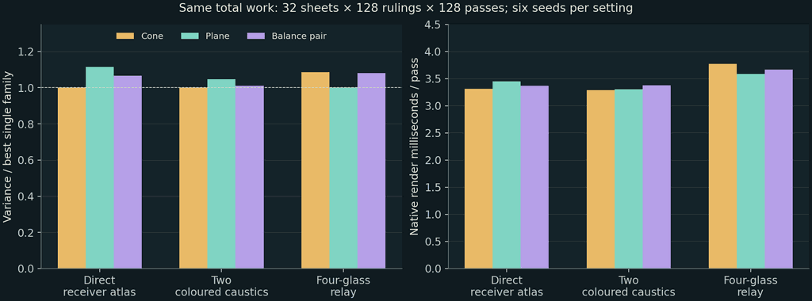
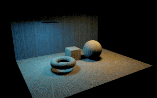
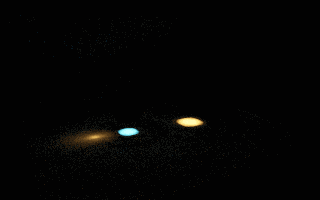
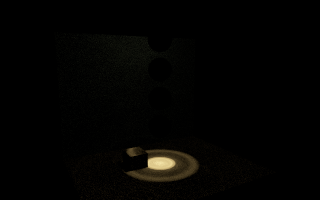

PP33 now offers Cone + plane: balance MIS alongside its existing cone and meridian-plane choices. It splits one total sheet budget, so selecting the pair does not quietly double the work. A cone can create a ring or conic on a plane; a meridian sheet can create a line. Refraction bends both into more complicated receiver curves.
Start with Surface-Curve-MIS.bat for the paired two-lens scene, or run
Showcases.bat -Scene 107 -Strategy 33 -SurfaceFamily 2 for the receiver atlas
(-Scene 109 selects the glass relay). The launcher uses the newest AIO build
and an isolated session, preserving the ordinary saved setup. In the viewer,
choose Sheet family to compare either single family with the pair.
The key result is less obvious than “different shapes complement each other”: in this implementation, both families sample exactly the same marginal distribution of emitted paths. Their difference is the correlation between nearby samples. The pair is useful as an orientation hedge and a controlled comparison. It is not a new caustic accelerator, nor a cure for a poorly sampled light-to-glass connection.
Start with the common measure
Write an emitted direction using two uniform coordinates (u,v). For an area
light, cos(theta)=sqrt(u) and phi=2*pi*v, so p_omega=cos(theta)/pi.
For a point light, cos(theta)=1-2u, so p_omega=1/(4*pi).
The cone chart holds u and stratifies v; the plane chart holds v and
stratifies u. Light selection, emitter-position sampling and Fresnel branch
probabilities are otherwise the same. The aggregate density across a family's
strata is therefore identical on the common measure:
The balance heuristic uses
The second equality holds for these two equal-density charts. The coefficient of every ruling is the
ordinary 1/(total sheets * rulings per sheet). This follows the standard
multi-sample balance construction; the application to these two equal-density
charts is a direct derivation from the native sampler.
Veach and Guibas, SIGGRAPH 1995
Each family's points are stratified and correlated, so independent-sample variance theorems cannot simply be applied to every ruling. The independent units for an uncertainty estimate are complete random sheets or complete independently seeded images.
For an odd total batch the extra sheet alternates by pass. A one-sheet batch alternates the family by pass. Neither case drops samples or changes the normalization. Source misses, occlusions, rejected topology and depth-truncated paths continue to count as zero contributions; accepted-hit normalization would bias the result.
Why not weight the line against the ring's inverse Jacobian?
A particular line and a particular ring generally live on different 1D supports. Their conditional arc-length PDFs are not competing densities on one shared curve. Directly comparing those numbers in an MIS formula would mix different measures.
An emitter-to-receiver map can fold. If one instead evaluates a receiver-space density, all valid preimages and their branch probabilities must be summed:
The simple map x=cos(phi) already has two preimages for every interior x.
Keeping only one root loses half its density. An occluder can remove one of
those preimages; it must not cause the remaining half to be renormalized.
At singular points the regular change-of-variables formula itself has a
limit/regularity issue; silently clamping its denominator is not a proof.
PP33 uses forward emission and real first-hit tracing, so it never pretends that a folded receiver map has a unique inverse. Distinct valid emitted paths arrive with their own flux; Fresnel roulette retains its existing marginal weighting. This also means a sharp caustic is represented by concentrated arrivals, not an extra arbitrary “caustic Jacobian” multiplier.
Correlation is the useful distinction
Let Y_c and Y_p be one cone-sheet and one plane-sheet estimate of a pixel,
each using the same number of rulings. For B independent sheets and a balanced
split, the pair's variance is
A single family has Var(single_i)=Var(Y_i)/B. Under these assumptions,
the pair lies between the two true variances. It cannot beat the better
single family globally merely by applying balance weights to identical PDFs.
Different pixels may prefer different sweep orientations, which makes the
pair a reasonable default when that preference is unknown; it is still not
an optimal per-pixel allocation scheme.
More explicitly, decompose one sheet by its shared source position and held angle H:
Increasing rulings along a sheet mainly reduces the second term. It does little for the first term if only rare held angles or emitter locations send light through a small glass aperture. This explains why drawing a smooth, dense-looking curve can still converge poorly across sheets. More independent sheets may help more than a denser sweep in that situation.
Surface caustics make both effects visible: the receiver map folds and its visibility/branch boundaries become sharp. One sweep direction may traverse a narrow footprint well while the other keeps missing it. But changing chart orientation does not make the source hit the glass more often in expectation. A genuinely better proposal would need, for example, source-direction guiding toward the relay with the corresponding full PDF, or a valid manifold connection. Those extensions are not claimed by this pair mode.
Measured native comparison
The retained run used PP33, 320 x 200, 128 passes, 32 sheets/pass, 128 rulings/sheet: 524,288 launched rulings per image. Six independent seeds were rendered for each family in each scene, for 54 images. Specular depth was 12; stochastic sampling, no spatial blur, pinhole camera, and no emitter/background context layer. Caustic-only was enabled in scenes 108 and 109. All display images use the same exposure and global transform.
Variance below is the image-average, per-pixel linear luminance sample variance across seeds. Timing is the renderer's measured work per pass, excluding its first two warmup passes and executable startup. This is not ground-truth MSE or a universal FPS claim. Six seed replicates are a small sample; the percentages describe this run and are not statistical certificates.
| Native scene | Cone variance | Plane variance | Pair variance | Pair / best single | Cone / plane / pair ms per pass |
|---|---|---|---|---|---|
| 107: direct receiver atlas, including a mesh torus | 5.7770e-4 | 6.4322e-4 | 6.1568e-4 | 1.066 | 3.31 / 3.45 / 3.37 |
| 108: two coloured surface-caustic lenses | 2.0680e-4 | 2.1627e-4 | 2.0872e-4 | 1.009 | 3.29 / 3.30 / 3.37 |
| 109: four-glass relay onto catchers | 3.2688e-5 | 3.0104e-5 | 3.2545e-5 | 1.081 | 3.77 / 3.58 / 3.67 |
The result fits the theoretical expectation: the pair stayed near the single families, with no measured speed or variance breakthrough. Cone had the lower sampled pixel variance in 107/108; plane in 109. The pair added a convenient same-budget comparison, not an excuse to advertise a win unsupported by data.
The native comparison gallery shows the images and
variance/cost chart. The summary data retain the
per-seed means, timing and exact budgets; the
run manifest records binary/config/film hashes
and points to the full local raw-film archive. Reproduce with
python docs/surface-photons/measure_pair.py .work/a-fresh-run.
Native comparison gallery

Direct receiver atlas



Two coloured surface caustics



Four-glass relay

These are retained native renders, with no retouching, denoising or blur. Black context is intentionally omitted from this restricted surface-path comparison. The measurements above use linear films; displayed images use exposure 1.4, the same exponential tone map and sRGB conversion.
Validation and scope
PrismSurfaceCurveTest passes 66,085 checks, including common-chart density,
odd and one-sheet allocations, balance normalization, folded-map preimages,
visibility masking, angular emitted power, receiver/film Jacobians and an
independent analytic point-light/plane radiance target. The old cone and plane
fixtures reproduced their checkpoint films byte-for-byte at the tested seed.
Finite curve quadrature remains available in the pair, but it retains its
finite-sampling bias; its screen filter also remains biased. The pair does
not add omitted path classes or expand PP33's supported materials/media.
The implementation still targets finite-depth L[S]*DE surface paths with
geometric normals, RGB smooth specular interfaces, homogeneous extinction,
first non-delta receivers and a pinhole sensor. See
the native surface-mode scope.